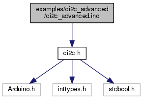
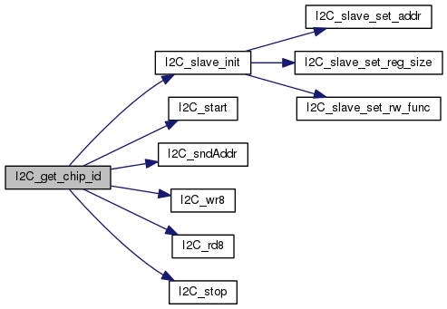
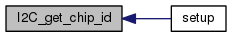
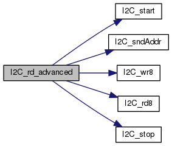
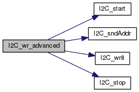

#include <ci2c.h>
Include dependency graph for ci2c_advanced.ino:

Functions | |
| void | setup () |
| void | loop () |
| bool | I2C_wr_advanced (I2C_SLAVE *slave, const uint16_t reg_addr, uint8_t *data, const uint16_t bytes) |
| This procedure calls appropriate functions to perform a proper send transaction on I2C bus. More... | |
| bool | I2C_rd_advanced (I2C_SLAVE *slave, const uint16_t reg_addr, uint8_t *data, const uint16_t bytes) |
| This procedure calls appropriate functions to perform a proper receive transaction on I2C bus. More... | |
| bool | I2C_get_chip_id (I2C_SLAVE *slave, uint8_t *data) |
| This procedure calls appropriate functions to get chip ID of FUJITSU devices. More... | |
Variables | |
| const uint8_t | blank = 0xEE |
| I2C_SLAVE | FRAM |
Function Documentation
◆ I2C_get_chip_id()
| bool I2C_get_chip_id | ( | I2C_SLAVE * | slave, |
| uint8_t * | data | ||
| ) |
This procedure calls appropriate functions to get chip ID of FUJITSU devices.
- Parameters
-
[in,out] slave - pointer to the I2C slave structure [in,out] data - pointer to the first byte of a block of data to read
- Returns
- Boolean indicating success/fail of read attempt
Here is the call graph for this function:

Here is the caller graph for this function:

◆ I2C_rd_advanced()
| bool I2C_rd_advanced | ( | I2C_SLAVE * | slave, |
| const uint16_t | reg_addr, | ||
| uint8_t * | data, | ||
| const uint16_t | bytes | ||
| ) |
This procedure calls appropriate functions to perform a proper receive transaction on I2C bus.
- Parameters
-
[in,out] slave - pointer to the I2C slave structure [in] reg_addr - register address in register map [in,out] data - pointer to the first byte of a block of data to read [in] bytes - indicates how many bytes of data to read
- Returns
- Boolean indicating success/fail of read attempt
Here is the call graph for this function:

Here is the caller graph for this function:

◆ I2C_wr_advanced()
| bool I2C_wr_advanced | ( | I2C_SLAVE * | slave, |
| const uint16_t | reg_addr, | ||
| uint8_t * | data, | ||
| const uint16_t | bytes | ||
| ) |
This procedure calls appropriate functions to perform a proper send transaction on I2C bus.
- Parameters
-
[in,out] slave - pointer to the I2C slave structure [in] reg_addr - register address in register map [in] data - pointer to the first byte of a block of data to write [in] bytes - indicates how many bytes of data to write
- Returns
- Boolean indicating success/fail of write attempt
Here is the call graph for this function:

Here is the caller graph for this function:

◆ loop()
| void loop | ( | ) |
Here is the call graph for this function:

◆ setup()
| void setup | ( | ) |
Here is the call graph for this function:

Variable Documentation
◆ blank
| const uint8_t blank = 0xEE |
◆ FRAM
| I2C_SLAVE FRAM |